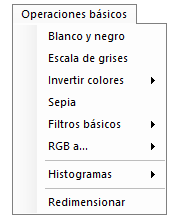
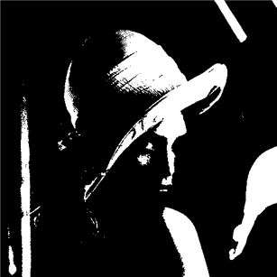
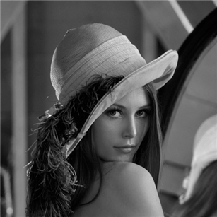
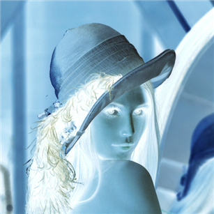
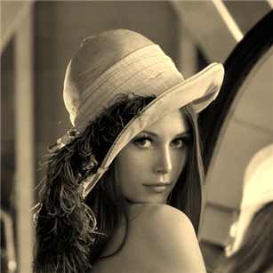
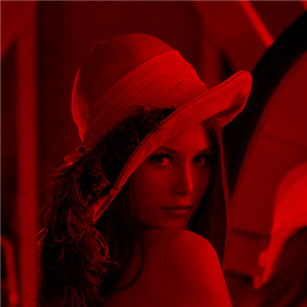
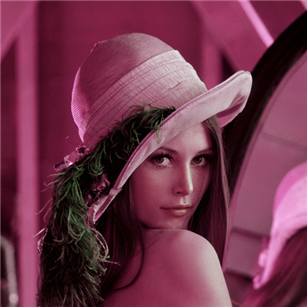
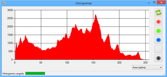
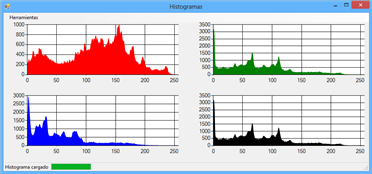
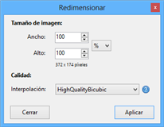

Tercer elemento de la barra de herramientas. A continuación, se muestra una imagen.

Ilustración 1. Menú de operaciones básicas.


En este menú puede encontrar las funciones básicas para modificar en una imagen. En esta guía, vamos a utilizar de ejemplo la mítica imagen de Lena, a continuación la podemos ver en su estado original.

Ilustración 2. Imagen original de Lena.


Binariza la imagen, es decir, cada píxel lo pasa a color blanco o negro. Esta función es muy sencilla, simplemente calcula la media de color para cada píxel ((ColorRojo+ColorVerde+ColorAzu)l/3) y en función del valor de salida de esta media, el píxel pasa a ser blanco o negro. Si la media es mayor o igual de 128, el píxel pasa a tener en sus tres canales (rojo, verde, azul) un valor de 255 (blanco), en caso contrario pasa a tener un valor 0 en todos sus canales (negro).

Ilustración 3. Imagen de Lena en blanco y negro.


La imagen se ha binarizado y todos los valores son o negros o blancos.
Con esta función se pasa a tener una imagen en escala de grises, es decir, cada píxel tiene un tono de gris. Los tonos de gris se caracterizan por tener el mismo valor en todos los canales (RGB), siendo el menor valor el color negro (0,0,0) y el mayor en blanco (255,255,255).
Para aplicar esta función hay que calcular, para cada píxel, la media de sus tres componentes (RGB) y dicha media aplicarla a los tres canales en el píxel tratado. Si se tiene un píxel con valores; Rojo = 100, Verde = 200, Azul= 50, se debe calcular la media ((100+200+50)/3) y aplicar el valor resultante a los tres canales, por lo tanto, el píxel resultante tendría los siguientes valores para cada canal; Rojo = (100+200+50)/3, Verde = (100+200+50)/3, Azul = (100+200+50)/3, haciendo el cálculo sería, Rojo = 116, Verde = 116, Azul = 116.
En la siguiente ilustración, se puede observar la imagen de Lena en escala de grises.

Ilustración 4. Imagen de Lena en escala de grises.


La imagen ha pasado de tener diferentes tonalidades a únicamente 256 tonos de gris.
Invertir colores (RGB/Rojo/Verde/Azul)
Esta función calcula la diferencia entre 255 (valor máximo de un píxel) y el valor actual, es decir, invierte los colores. Un ejemplo claro es tomar un píxel de color blanco, cuyos valores serían (para los canales RGB) de 255. Si invertimos el color, hay que restar 255 menos el valor del píxel actual que como es 255, daría un resultado de 0 y el píxel pasaría a ser negro.
Tiene 4 variantes esta función, RGB, Rojo, Verde, Azul.

Ilustración 5. Lena con canales RGB invertidos.


Los valores de los colores se han invertido y lo que antes era oscuro ahora es claro.
Crea una imagen modificando sus píxeles pasando a tener tonos sepia. Para poder realizar esta transformación aplica a cada canal un valor calculado en función de unos pesos específicos.
Rojo = Rojo * Peso1 + Verde * Peso2 + Azul * Peso3
Verde = Rojo * Peso4 + Verde * Peso5 + Azul * Peso6
Azul = Rojo * Peso7 + Verde * Peso8 + Azul * Peso9
Es recomendable que la suma de los pesos para cada color se igual a 1, por ejemplo, para el canal Rojo la suma de Peso1 + Peso2 + Peso3 debería ser igual a 1 si no se quiere alterar demasiado los valores. No obstante es opcional, se hace una comprobación previa para determinar que el valor sea correcto y no mayor de 255.
Los valores para los tonos sepia son los recomendados por Microsoft y serían, 0.393, 0.769, 0.189, 0.349, 0.686, 0.168, 0.272, 0.534, 0.131.

Ilustración 6. Lena en tonos sepia.


La imagen ahora tiene únicamente tonos sepia.
Filtros básicos (Rojo/Verde/Azul)
Estos filtros calculan la media para cada píxel ((ColorRojo+ColorVerde+ColorAzu)l/3) y el valor resultante lo asignan al canal al que se quiere aplicar el filtro y valor 0 para los dos canales restantes.
Tiene 3 variantes, filtro rojo, filtro verde y filtro azul:

Ilustración 7. Imagen de Lena con un filtro rojo.


Se aprecia que la imagen ahora únicamente tiene colores rojos, es algo así como una escala de grises pero sólo de rojos.
Esta función intercambia, para cada píxel, el valor de sus canales. Tiene tres variantes, BGR, GRB, RBG:

Ilustración 8. Imagen de Lena con el canal RGB a RBG.


Como puede observarse la imagen se ha tornado a tonos morados.
Muestra una serie de gráficas con el histograma acumulado de la imagen. El histograma acumulado, no es más que el número de píxeles que tiene un determinado valor. Por ejemplo, para el canal rojo y el valor 50, sería el número de píxeles que tiene valor 50 en el canal rojo.
Dentro de los histogramas se puede seleccionar 5 formas de visualización: área (spline), área, columnas, línea (spline), línea. Además, el tamaño del histograma se adapta al tamaño de la ventana, es decir, si se quiere visualizar el histograma en un gran tamaño, basta con maximizar la ventana y se adaptará para que se vea más grande.
En la gráfica se muestra el valor del píxel en el eje de las x, y el número de píxeles en el eje de las y.
Hay dos modalidades de visualizarlos:

Ilustración 9. Histograma detallado canal rojo.



Ilustración 10. Todos los histogramas.


Esta función posibilita cambiar el ancho y alto de una imagen. Esta modificación se permite hacer asignando directamente el ancho y alto o el porcentaje de ancho/alto que se quiere aumentar o disminuir.
Además, incluye la capacidad para seleccionar el tipo de interpolación con el que se quiere realizar el escalado de la imagen. Los diferentes tipos de interpolación son:

Ilustración 11. Redimensionar imagen.


Created with the Personal Edition of HelpNDoc: Free help authoring environment